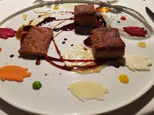
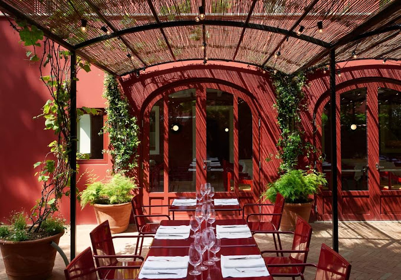
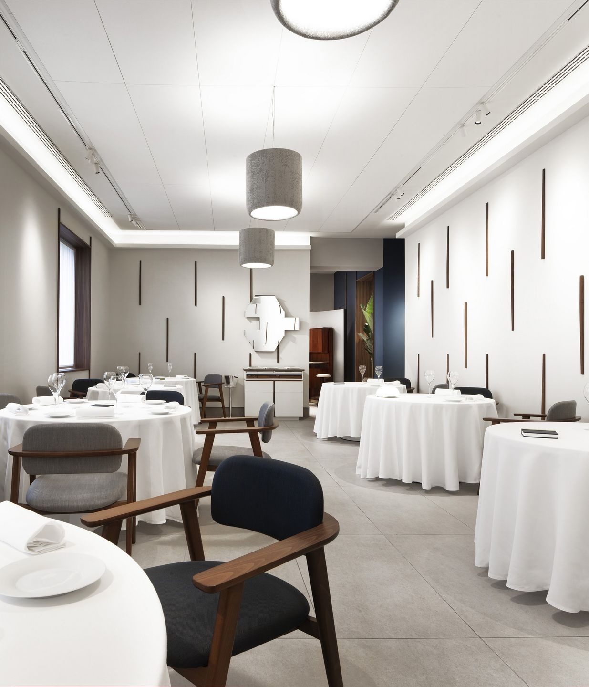
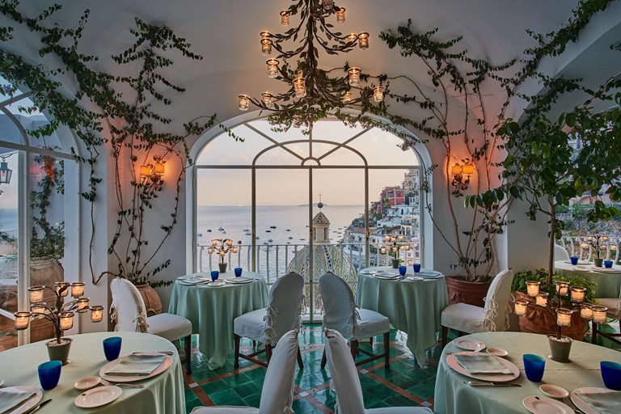
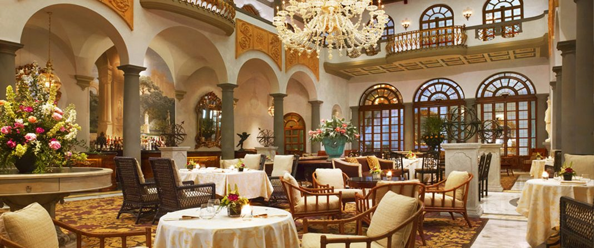
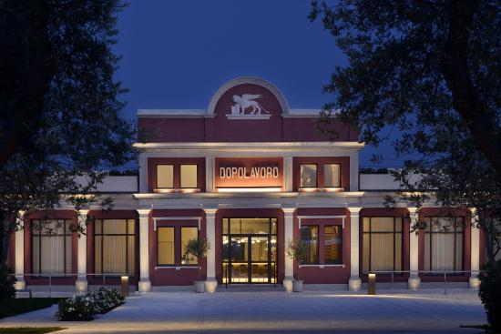
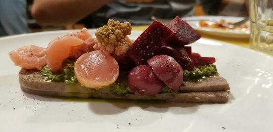
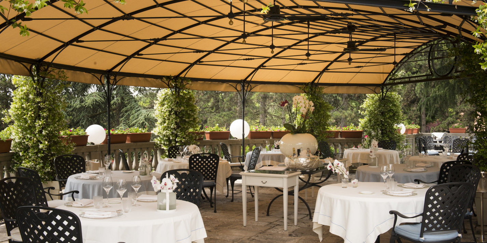
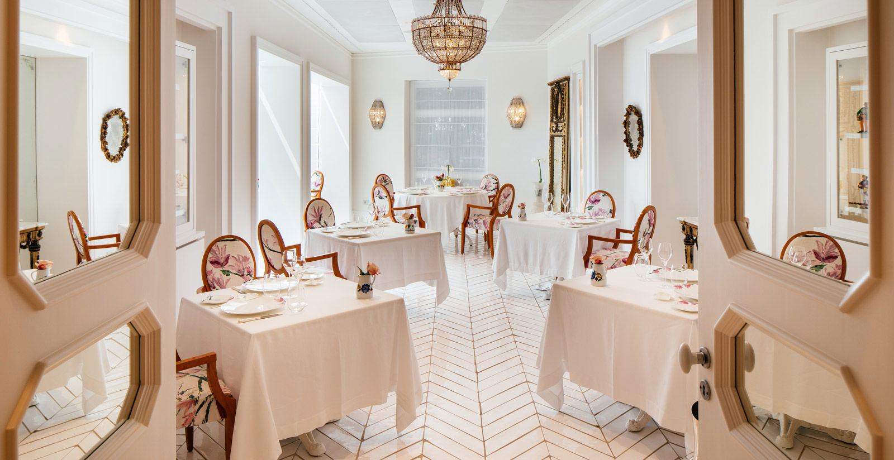

| Top Rated Restaurants In Italy | ||
|---|---|---|
| Name of Restaurant | Location of Restaurant | Image of Restaurant |
| Osteria Francescana | Modena |  |
| La Pergola | Rome |

|
| Le Calandre | Rubano |  |
| Il Luogo di Aimo e Nadia | Milan |  |
| La Sponda | Positano |  |
| Enoteca Pinchiorri | Florence |  |
| Fiola at Dopolavoro Venezia | Venice |  |
| SantoPalato | Rome |  |
| Da Vittorio | Bergamo |  |
| Don Alfonso 1890 | Sant’Agata Village |  |